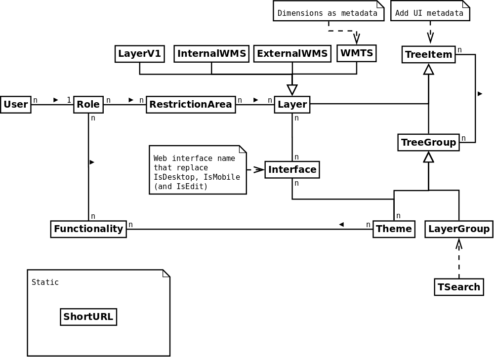

Server-side development¶
Create development environment in a project¶
c2cgeoportal developers often need to test c2cgeoportal changes in the context of an existing c2cgeoportal application. Here’s how:
- Change current directory to your sources root directory and clone
c2cgeoportalthere, in the following line the sources directory is the user home directory. Than checkout the submodules, build c2cgeoportal, and go back to your project directory:
cd ~ git clone git@github.com:camptocamp/c2cgeoportal.git cd c2cgeoportal git submodule update --init make build cd ~/<project>
You can now check out your development branch if necessary.
Edit your
<user>.mkto have something like this:INSTANCE_ID = <user> DEVELOPMENT = TRUE REQUIREMENTS = -e ../c2cgeoportal include <package>.mk
Uninstall the regular c2cgeoportal egg from the virtual environment:
.build/venv/bin/pip uninstall c2cgeoportalRemove/comment the following line in the CONST_requirements.txt file:
c2cgeoportal==1.6.0
Build your application application:
rm .build/requirements.timestamp && make -f <user>.mk build
Note
Print performance issue
When restarting the print server frequently, performance issues may randomly be observed. This is done in random number generation.
To improve the performances you should add in the /srv/tomcat/tomcat1/bin/setenv-local.sh file:
export ADD_JAVA_OPTS="-Djava.security.egd=file:/dev/./urandom"
Tests¶
Running tests¶
To be able to run c2cgeoportal tests you need to have the c2cgeoportal source code, and a make environment for it. So do that first, as described below.
Install c2cgeportal from source¶
Check out c2cgeoportal from GitHub:
git clone git@github.com:camptocamp/c2cgeoportal.git
Change into the c2cgeoportal directory and initialize the submodules:
cd c2cgeoportal git submodule update --init
c2cgeoportal has two types of tests: unit tests and functional tests. The unit
tests are self-contained, and do not require any specific setup. The functional
tests require a PostGIS database and a MapServer installation that can access
the test mapfile c2cgeoportal/tests/functional/c2cgeoportal_test.map.
Unit tests¶
To run the unit tests do this:
make build .build/venv/bin/python setup.py nosetests -a '!functional'
Functional tests¶
For the functional tests you need to have MapServer and PostgreSQL/PostGIS installed. Make sure this is the case before proceeding.
You now need to create PostGIS database (named c2cgeoportal_test for example)
and a schema named main into it.
To create the database use the following command if you have a PostGIS database template at your disposal:
sudo -u postgres createdb -T template_postgis c2cgeoportal_test
Note
If you don’t have a template named template_postgis use this:
sudo -u postgres createdb -E UTF8 -T template0 c2cgeoportal_test sudo -u postgres createlang plpgsql c2cgeoportal_test sudo -u postgres psql -d c2cgeoportal_test \ -f /usr/share/postgresql/9.1/contrib/postgis-1.5/postgis.sql sudo -u postgres psql -d c2cgeoportal_test \ -f /usr/share/postgresql/9.1/contrib/postgis-1.5/spatial_ref_sys.sql sudo -u postgres psql -d c2cgeoportal_test \ -c 'GRANT ALL ON geometry_columns TO "www-data";' sudo -u postgres psql -d c2cgeoportal_test \ -c 'GRANT SELECT ON spatial_ref_sys TO "www-data";'
The template0 is needed on Debian and Ubuntu to create a utf-8
database.
If you don’t have a www-data user you need to create one:
sudo -u postgres createuser -P www-data
To create the main and main_static schema:
sudo -u postgres psql -d c2cgeoportal_test -c 'CREATE SCHEMA main;' sudo -u postgres psql -d c2cgeoportal_test -c 'GRANT ALL ON SCHEMA main TO "www-data";' sudo -u postgres psql -d c2cgeoportal_test -c 'CREATE SCHEMA main_static;' sudo -u postgres psql -d c2cgeoportal_test -c 'GRANT ALL ON SCHEMA main_static TO "www-data";'
If you don’t use the default variables edit the vars.yaml and set the dbuser, dbpassword,
dbhost, dbport, db, and mapserv_url as appropriate.
mapserv_url needs to refer a valid mapserv instance running locally,
i.e. on the machine you run the tests on. For example, if you use your desktop
machine it may be http://locahost/cgi-bin/mapserv.
Note
On Camptocamp servers mapserv is usually not available on the
localhost virtual host. One option involves creating a specific script
alias for mapserv, for example by adding something like the following
to your /var/www/<virtual_host_name>/conf/mapserv.conf file:
ScriptAlias /mapserv /usr/lib/cgi-bin/mapserv
<Location /mapserv>
SetHandler fcgid-script
</Location>
To know what domain name to use look at the ServerAlias‘es
configured for the virtual host in
/etc/apache2/sites-enabled/<virtual_host_name>.
Here’s an example of a possible mapserv_url:
http://mapfish-geoportal-demo/mapserv.
Once done with the editing of vars.yaml, run make
to generate c2cgeoportal/tests/functional/test.ini and
c2cgeoportal/tests/functional/c2cgeoportal_test.map:
make build
You can now run the functional tests with this:
.build/venv/bin/python setup.py nosetests -a functional
All tests¶
To run all the tests do this:
make tests
To run a specific test use the --where switch. For example:
.build/venv/bin/python setup.py nosetests --where \
c2cgeoportal/tests/functional/test_themes.py:TestThemesView.test_catalogue
Adding tests¶
To Be Done
Upgrade dependencies¶
When we start a new version of c2cgeoportal or just before a new development phase it’s a good idea to update the dependencies.
Eggs¶
All the c2cgeoportal (and tilecloud-chain) dependencies are present in
the c2cgeoportal/scaffolds/update/CONST_versions.mako file.
To update them you can simply get them from a travis build in the
.build/venv/bin/pip freeze task.
Submodules¶
Go to the OpenLayers folder:
cd c2cgeoportal/static/lib/openlayers/
Get the new revision of OpenLayers:
git fetch git checkout release-<version>
Then you can commit it:
cd - git add c2cgeoportal/static/lib/openlayers/ git commit -m "update OpenLayers to <version>"
Database¶
Object model¶
TreeItem and TreeGroup are abstract (can’t be create) class used to create the tree.
FullTextSearch references a first level LayerGroup but without any constrains.
It’s not visible on this schema, but the User of a child schema has a link (parent_role)
to the Role of the parent schema.
ui_metadata vs functionality¶
Technically the same functionality can be reused by more than one element.
functionalities are designed to configure and customize various parts of
the application. For instance to change the default basemap when a new theme
is loaded.
To do that in the CGXP application we trigger an event when we load a theme the
new functionnalities.
The ui_metadata contains attributes that are directly related to the element.
For example the layer disclaimer, ...
Migration¶
We use the alembic module for database migration. alembic works with a
so-called migration repository, which is a simple directory in the
application source tree:CONST_alembic. As the CONST_ prefix suggests
this repository is part of the c2cgeoportal_update scaffold, it is created
or updated when this scaffold is applied. So developers who modify the
c2cgeoportal database schema should add migration scripts to the
c2cgeoportal_update scaffold, as opposed to the application.
Add a new script call from the application’s root directory:
.build/venv/bin/alembic revision --branch-label <branch> -m "<Explicit name>"
Where <branch> is the branch on witch we will merge, usually master but
it can also be something like 2.0.
This will generate the migration script in
CONST_alembic/versions/xxx_<Explicite_name>.py
You should NOT commit the script in this directory because this migration
script should be shared with all c2cgeoportal projects.
It is the c2cgeoportal update template which is responsible for updating
this directory.
The script should not get any part of the c2cgeoportal.model module!
To get the project schema use:
schema = context.get_context().config.get_main_option('schema')
The scripts should not fail if it is run again. See: http://alembic.readthedocs.org/en/latest/cookbook.html#conditional-migration-elements
Then customize the migration to suit your needs, test it:
.build/venv/bin/alembic upgrade head
Once you have tested it, move it to the c2cgeoportal update template, in
c2cgeoportal/scaffolds/update/CONST_mlembic/versions/.
Sub domain¶
All the static resources used sub domains by using the configurations variables:
subdomain_url_template and subdomains.
To be able to use sub domain in a view we should configure the route as this:
from c2cgeoportal.lib import MultiDomainPregenerator
config.add_route(
'<name>', '<path>',
pregenerator=MultiDomainPregenerator())
And use the route_url with an additional argument subdomain:
request.route_url('<name>', subdomain='<subdomain>')}",
Code¶
Dependencies¶
Major dependencies docs: